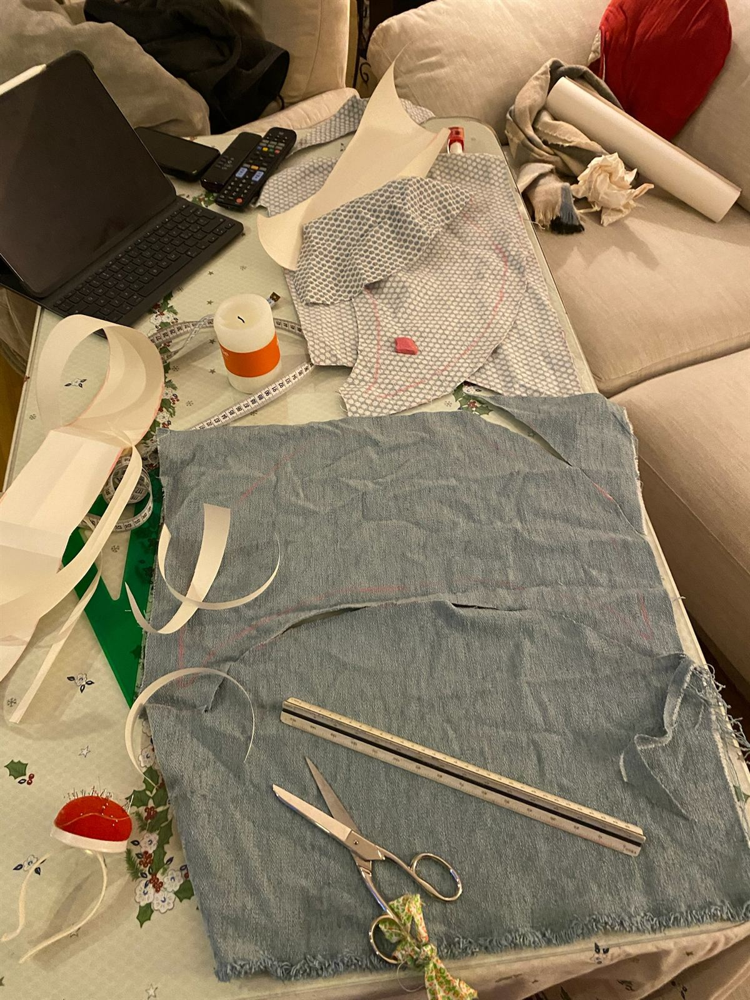
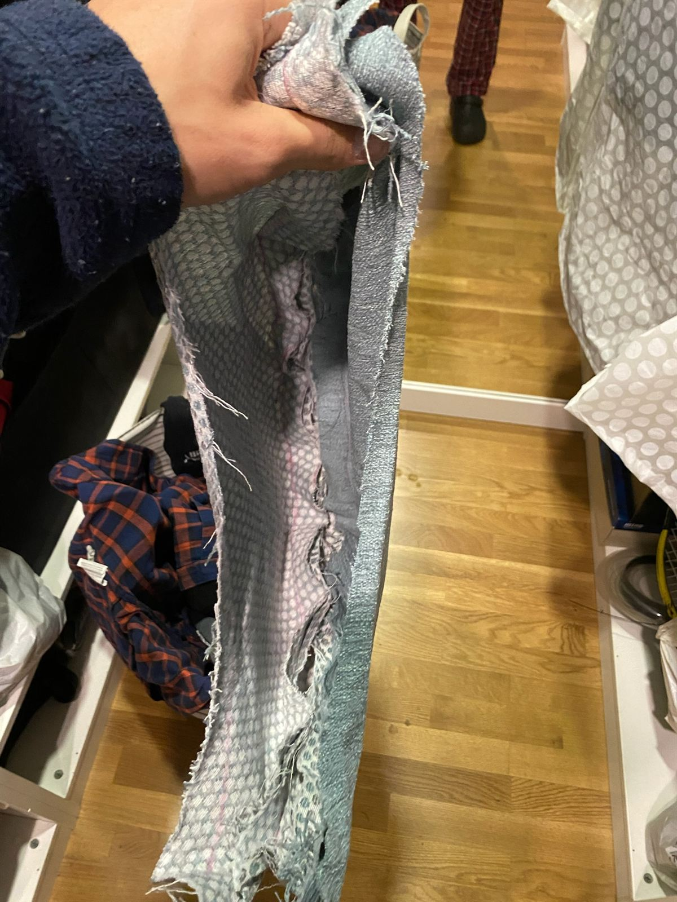
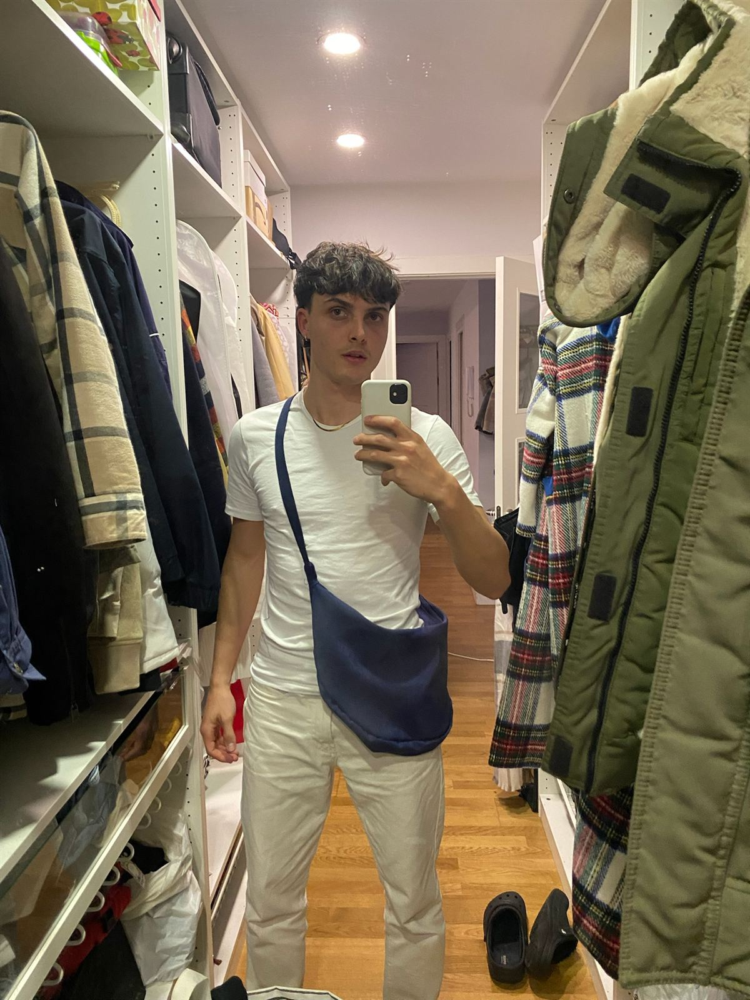
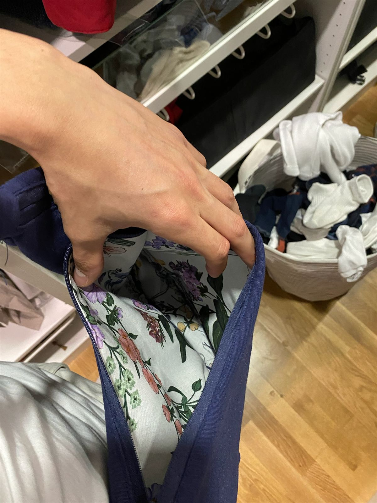
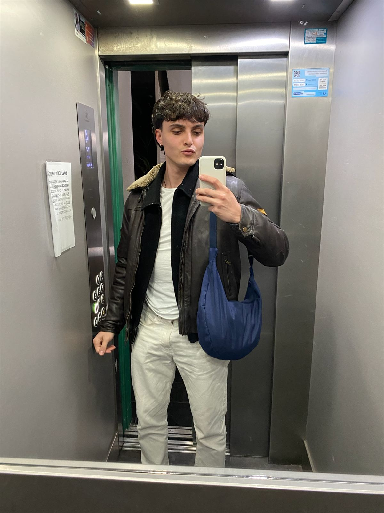
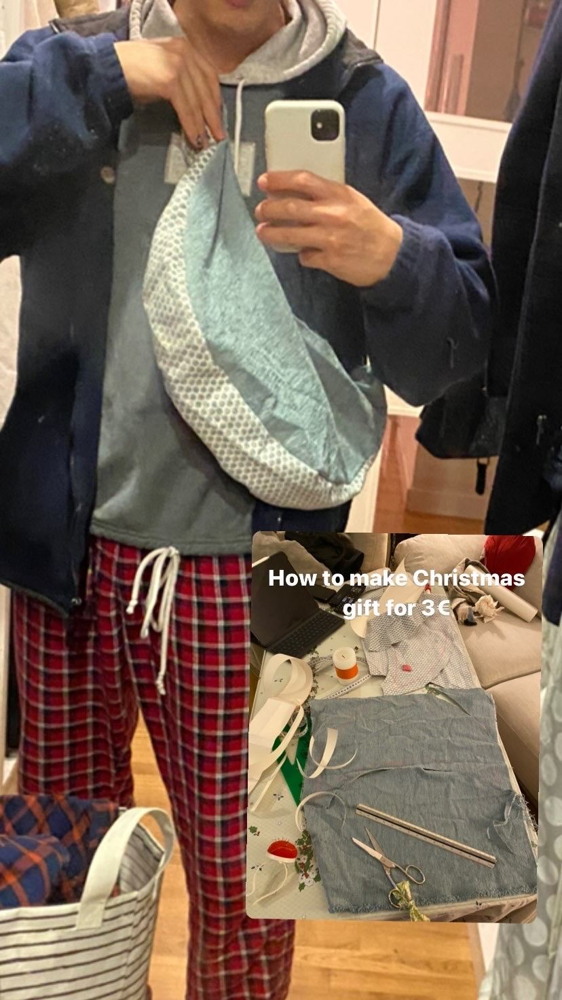
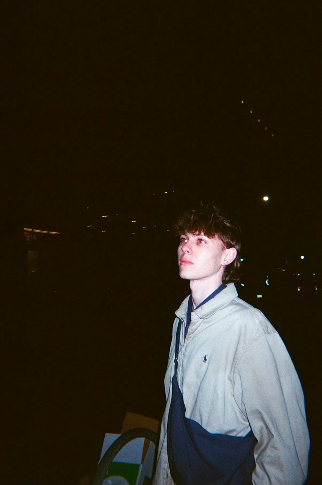
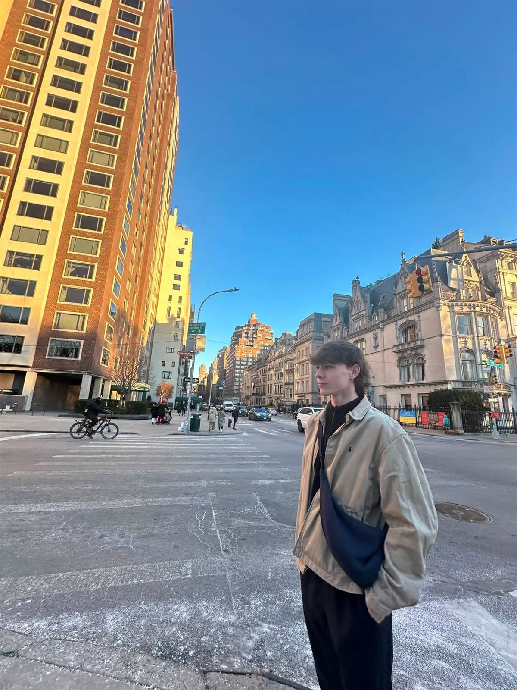
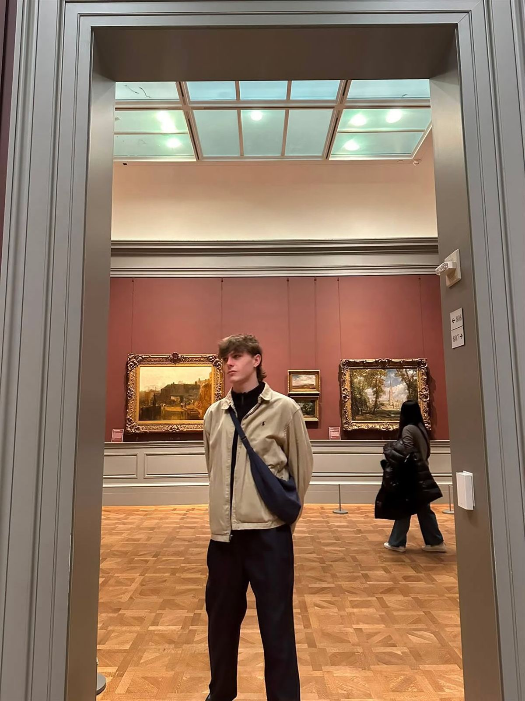
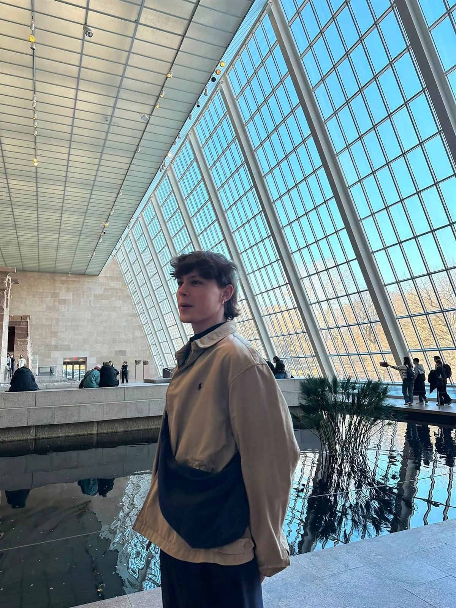

Crossbody bag
2023Own patternCanvas














The brief
The first thing I ever made. The pattern was simple, but it was the first time I had to decide every single part of an object myself: the proportions, the closure, the lining, the order in which it went together. Nobody handed me a specification.
The pattern
Drafted from zero. I worked almost entirely on intuition, and that is still the part I am proudest of — not that it came out well, but that it came out well without a method.
Spec
- Year
- 2023
- Pattern
- Drafted from scratch
- Materials
- Cotton canvas, silk lining
- Build time
- Two weeks
- Where it is
- Given away
What I learned
A bag was a flat problem, and I could solve it with the technical drawing I already knew from my industrial engineering degree. What surprised me was that the decisions I had made on paper held once the canvas was sewn.
A year later I made another bag,
this time after a Mulberry. →